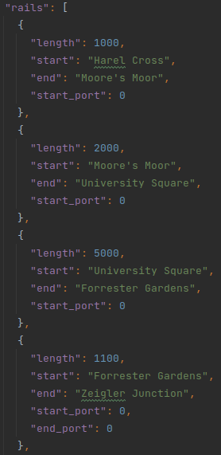

Assumptions
-
The two tracks joining at zeigler Circus first pass through a virtual junction with traverse_delay of 0 seconds, the junction and the station are connected with a track of length 0 meters.
-
Capacity of the trolley over time is interpreted as amount of passengers in the trolley as the capacity of the trolley would just be a flat line.
-
We don't have any special logic for passengers that have an unreachable destination, they will just wait indefinitely.
Part 1: Components of the Model
Passenger
Trolley
Rail
Junction
Split
Station
Generator
Platform
Track
Light
Part 2: Creating the network
In order to create the network we've chosen to do this via the JSON format. This is because we thought this would the most light-weight format to create a flexible solution of modeling the rail network. In the next paragraphs we'll discuss the format of the JSON and then the code that is used to interpret this JSON. The json can be found here.
JSON format

First of all we have the name stations. Its value is a list that contains the name of a station, and a split. This split is a dictionary of the outgoing lines at that point. The names are the line colours and the numbers are on which track they need to go. We look at these outgoing lines clock-wise, starting from 10 o'clock.
Next up we have the junctions. We have for each junction a name, an input and possibly the transfer_time. The transfer time is the time that it takes to take the junction, by default this is 10, so it is not specified for 2 of the 3 junctions. The third junction belongs to a station.
Now, we have the rails list. This contain a list of all the possible rails in the model. Each entry contains the length, the start station/junction name and the end station/junction name. You can see that sometimes we define the start_port and the end_port. This needs only to be done when we depart from a station and arrive in a junction, this is so we can split and join properly.

Following the rails list, we have the lines. The lines are again a list. We first have the name or color of the line and then all the stations that it contains.

Lastly, we have a list of trollies. Each of these entries contain the velocity of the trolley, the location at which they start and the line to which they belong.
JSON parsing
In order to read the JSON file we need the classes file and the parse file to create the model. The classes file is used to represent the data for each of the model elements. The parse file contains the code to parse the JSON file format. We use the splat operator to turn the dicts returned by the parser into arguments for the classes in order to create objects.